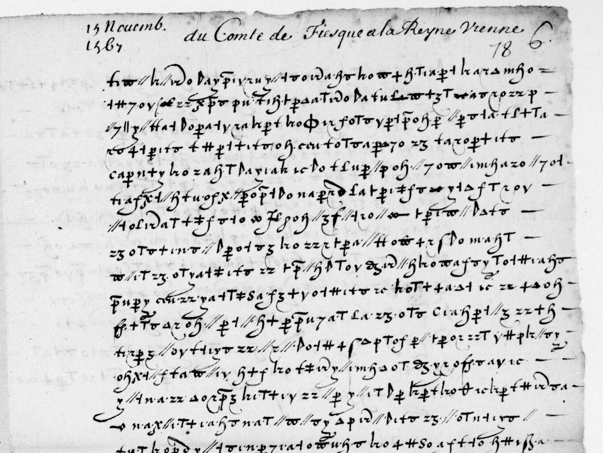
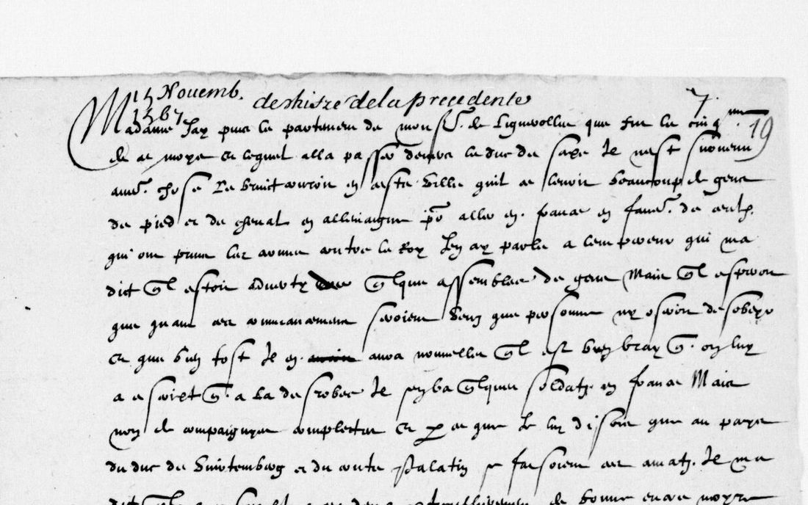
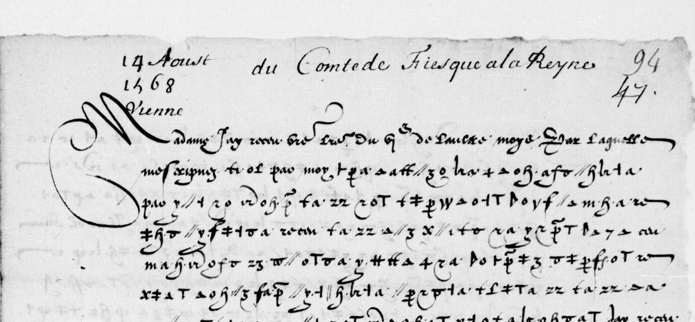

At a glanceKnown key applied, partial · 81% of decoded letters in French words; one letter 83.8% against its decipherment of the time
- The letters
- Scipion de Fiesque (Scipione Fiesco), French envoy to Emperor Maximilian II, to Catherine de’ Medici and Charles IX, October 1567 to November 1569: 23 letters with cipher passages, 44 pages, 29,707 signs.
- Where
- Bibliothèque nationale de France, Français 15919, via Gallica (btv1b90573568). No DECODE record.
- The cipher
- A homophonic alphabet of letters, digits and invented signs, two to five per letter, with doubled-letter signs, about a dozen word codes and null groups.
- How it was deciphered
- Satoshi Tomokiyo reconstructed the key for this volume; Harumi-Matsuba transcribed every cipher page with AI models and decoded it. Here the key was re-applied, the decodes scored, a few lines compared with the images, and one letter checked against the decipherment of the time on the facing page.
- What it says
- Levies in Germany for the Huguenots, the death of Don Carlos and the marriage negotiation, Archduke Charles’s journey to Spain, and after Moncontour the Emperor’s offer to mediate.
- Still open
- One cipher page not transcribed (view 23 left); doubtful stretches throughout (about 19% of decoded letters fall outside French words); a few signs and codes.
- Credit
- Reading contributed by Harumi-Matsuba (issue #52), made entirely with AI models (Claude; OpenAI Codex and Claude Sonnet for the cross-checks). No human has checked the transcription. Their figures, 85.0–93.6% agreement between two AI transcriptions and a shuffled-key control, measure consistency, not sense. Key by Satoshi Tomokiyo.
01 The letters
Scipion de Fiesque, a Genoese in French service, was Charles IX’s envoy at the court of Maximilian II from the autumn of 1567, when the King’s marriage to the Emperor’s daughter Elisabeth was being negotiated. BnF Français 15919 (formerly Harlay 238) holds 174 folios of his letters to the King and to the Queen Mother. Most open and close in clear and carry the sensitive part in cipher. Satoshi Tomokiyo noted that many are partly in cipher and reconstructed the key so that the passages with no decipherment of the time could be deciphered.

Harumi-Matsuba’s page list (44 pages) runs from October 1567 to 4 November 1569: eighteen letters to the Queen Mother and five to the King (15 February 1568, 4 September 1568, 10 September, 20 October and 29 October 1569). One is dated from Speyer (2 December 1568), the rest from Vienna. The per-page table, with view numbers, sign counts and a one-line summary, is in contributed/docs/PAGES.en.md in the repository folder.
02 The key
Tomokiyo’s table (Cryptiana, “French Ciphers for German (and Eastern) Affairs”) gives each letter two to five signs: digits (4 = b, 1 and 8 = i, 9 = n), letters used as signs (a and o = e, x = f, p = l, u = o), and invented forms (Δ = i, ϕ = m, ⊢ = q, ⊣ = r, ß = r). There are signs for doubled letters (ee, ff, ll, mm, nn, rr, ss), word codes (que, qu’il, et, vous, pour, le Roy, l’Empereur, and Φ for Saxe) and groups of clear-looking letters (par, moy, bro) that are nulls. The contributor named the signs (key.tsv, 95 entries) and inferred 23 values the table lacks, among them 16 = ce, ρ = e and the pair ꝑꝑ = ff. All 44 pages are in this one key.
03 What was contributed
Harumi-Matsuba opened issue #52 on 20 October 2026 and extended it twice the same day, with the work in a public repository (data CC BY 4.0, code MIT). The account was created on 19 October. Their own description of the method:
- First transcription by Anthropic’s Claude, from line crops of the BnF’s full-size images.
- Disagreements with OpenAI Codex transcriptions shown on enlarged crops to Codex and Claude Sonnet; a sign was corrected only where both agreed.
- Afterwards, fresh Codex transcriptions made without sight of the first: 85.0–93.6% agreement by value per page (the lower run where there are two).
- For every page, 1,000 keys with the letter values shuffled: none scores as French-like as the true key.
- Line-by-line readings of five letters, most lines marked as inferred (word division, supplied spelling, the choice between s and p for one looped sign); mechanical decodes of all 44 pages.
A person chose the target and decided to publish; no person checked the transcription. Agreement between two AI readers measures their consistency, and a shuffled-key control shows the key is right, but neither shows how much of the text reads as sense. This project’s bar for a complete reading is 95% of the cipher read as sense, measured. So the result is recorded here as a contributed result with a partial extent.
04 Measured here
The contributed key was re-applied to every transcription with this project’s own decoder (measure.py):
- 29,627 of 29,707 signs take a value (99.7%).
- Under the project’s period French model (
fr-1530-despatches) the decodes score −2.37 to −3.42 per character; the best of 200 shuffled keys per page scores −4.38 to −5.31, and none of the 8,800 reaches the true key. Clean French scores −1.64 on the same model. - Split into words of a period French lexicon, 81.0% of the decoded letters fall in words, against 27.6% for shuffled keys and 90.3% for clean modern French with the spaces removed. Pages range from 68% (view 8 left) to 90% (view 155 right).
The key is right and the decodes are mostly French, but between a fifth and a tenth of the text is not yet words, which matches the contributor’s own marking of most lines as inferred.
05 A check against 1567
The volume holds one decipherment made at the time: view 23 right, headed “deschiffré de la precedente”, is a clear copy of the letter of 15 November 1567. The contributor found it but did not use it, because AI readers of its cursive agreed only 51–55% with their decode. It was transcribed here by eye from a 2,600-pixel image, as far as the end of the cipher on view 22 right (calib_v023r.txt).

Of its 1,193 letters, the contributed decode of view 22 right matches 1,000 (83.8%), and 98 of its 182 words of three or more letters come out whole (calib.py). The sense runs the same throughout: Lignerolles has left for the Duke of Saxony, it is rumoured that horse and foot are being raised in Germany for those who have taken arms against the King, the Emperor expects his mandates to stop it, he has written “de bonne encre noire” to two princes. Two places differ in content. Where the copy has “au pays du duc de Wirtemberg et du conte palatin”, the decode has the Φ code for Saxe and no palatin. And the looped sign that serves for both s and p gives desuis, sarteiment for depuis, partement. This reading of the cursive is itself not checked by a second reader.
The same check found a gap: the cipher of this letter continues on view 23 left (f. 18v, about seventeen lines), which is not in the contributed transcription. Its text is on the decipherment page, from “de son pays d’Austriche” to the signature.
06 The reading
From the contributor’s line-by-line reading; brackets are their supplied letters, … their unread places.

6 March 1568, to the Queen Mother (f. 39r): J’ay entendu que le duc [J]ehan Guillaume [de] Saxe, qui est allé en France pour vostre service, a amené avec luy six [p]rescheu[r]s, qui sont d’une secte qui s’appelle Flacciani.
4 September 1568, to the King (f. 100r), on the marriage: il m’a dict qu’à ceste heure il n’y a plus aucune difficulté que le mariage [ne se] face [puisque le pr]ince d’Espaigne estoict [mort]. Most of the other lines of this page have gaps.
29 October 1569, to the King (f. 158r), after Moncontour: comme vous estiez [p]rest à partir pour aller trouver ce camp pour poursuyvre le fruict de la victoire … m’a dict qu’il ne s’est meu à mettre en avant ce parti que pour une sincere affection et grand desir qu’il a de veoir delivré de ceste guerre intestine.
The mechanical decodes of all 44 pages are in contributed/data/decoded_*.txt; the readings of the five letters Tomokiyo named are in contributed/docs/READING.en.md.
07 What remains uncertain
- View 23 left (f. 18v): the second cipher page of the 15 November 1567 letter, not transcribed. Workable; the decipherment of the time gives its text.
- All 44 pages: about 19% of the decoded letters fall outside French words, and most lines of the contributed readings are inferred. A sign-by-sign re-check on the images is owed, by a person or a calibrated reader.
- Signs and codes: ρ, K, ⊸ and one ligature have no table value; one barred sign may be o or ss; the looped sign is s or p by context; Φ reads Saxe on view 22 right where the copy of the time has Wirtemberg.
- Pages: the contributor scanned the 183 views at reduced size, and missed view 23 left; others may be missing. The margins of views 103 right and 125 right may carry decipherments of the time, not yet transcribed.
- Spot check: on view 22 right, the first cipher line (40 signs) and the start of the third (26 signs) match the transcription sign for sign; one sign near the end of the third line could not be confirmed. About 80 signs is a small sample.
08 Sources
- Bibliothèque nationale de France, Français 15919, Gallica btv1b90573568: view 22 (f. 18r, letter of 15 Nov 1567), view 23 (f. 18v cipher, f. 19r decipherment), view 99 (f. 94r). Images through the BnF IIIF service.
- Satoshi Tomokiyo, “French Ciphers for German (and Eastern) Affairs”, Cryptiana: the reconstructed key.
- Harumi-Matsuba, fiesque1567-public (commit 659e2e1, 20 Oct 2026; CC BY 4.0 data, MIT code), and issue #52.
- H. de La Ferrière (ed.), Lettres de Catherine de Médicis, vol. 3: the Queen Mother’s replies to Fiesque, not his ciphered passages.
Working notes, the contributed files and the measuring scripts: targets/fiesque1567/.